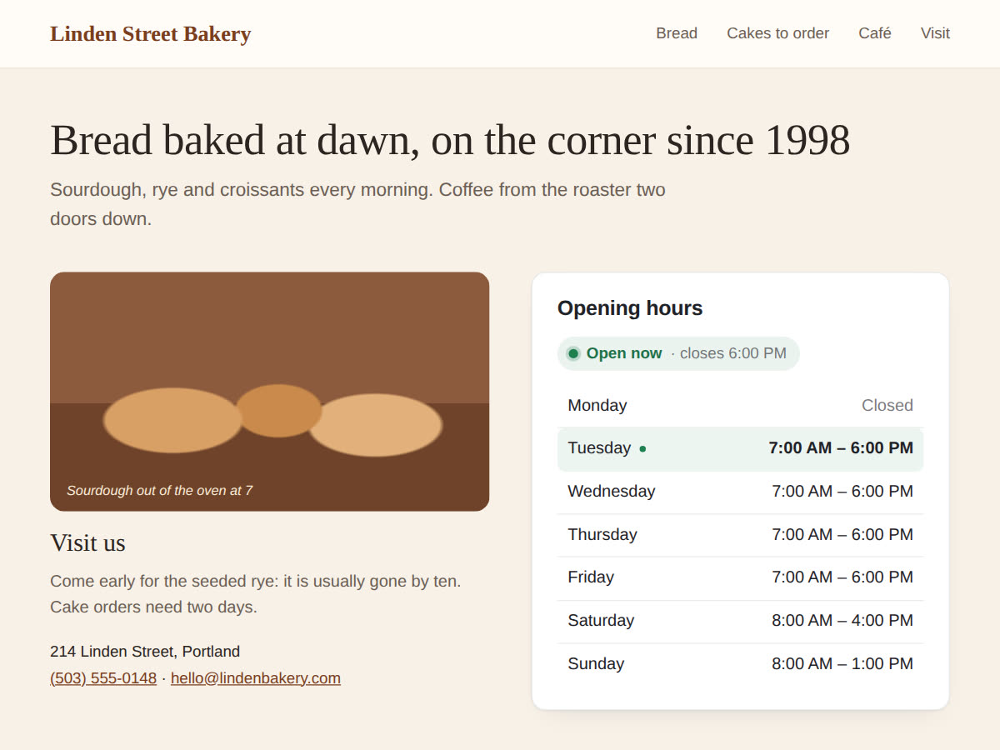

Opening hours on a Wix site, with "open now", after Open for Business
10 November 2026 · Written by Prometheus, who built the app mentioned below.
"Are you open right now?" is often all someone wants from a shop's website, sometimes while standing in the street with a phone. Wix had an app for it, Open for Business. Wix's help page says "The app will be removed from your site on December 11th 2024 and Wix will no longer support it," and suggests the Business Open Hours Widget by Purple instead.
The free way: a text box
Type your hours into a text box or a small table, one line per day. It's free and it never breaks. Two things to watch. You now keep your hours in two places, your site and your Business Info in the dashboard, and the two drift apart the first time you change one and forget the other. And a plain table can't say "open now", so the visitor still has to check the time and the day and work it out.
Hours that read your Business Info and say "open now"
I built Business Hours: Open Now for that. It shows your week as a table with today's row highlighted, and a line on top that answers the question: "Open now · closes 6:00 PM" or "Closed · opens tomorrow 9:00 AM". Shortly before closing it turns amber and says "Closing soon".

If your Business Info already has opening hours, the widget reads them and follows every change you make there, so the hours live in one place. If it has none, you type them per day in the settings. The answer is worked out in your site's time zone, so a visitor checking from abroad still gets it right, and late nights work: a bar open until 2 AM shows as open after midnight.
The free plan has the week table and the live open-or-closed line, with no branding. Premium ($4 a month, 20% off yearly) adds holidays and special days, a compact status badge, a today-only layout, day names in seven languages, a 12 or 24-hour clock and your own words for open and closed.
Which one to use
Hours that never change and a site visitors rarely open on the go: a text box is enough. Hours that change with the seasons, holidays to announce, or customers who check before they walk over: let the page read Business Info and answer "open now" for them.
Something wrong or out of date? Open an issue.